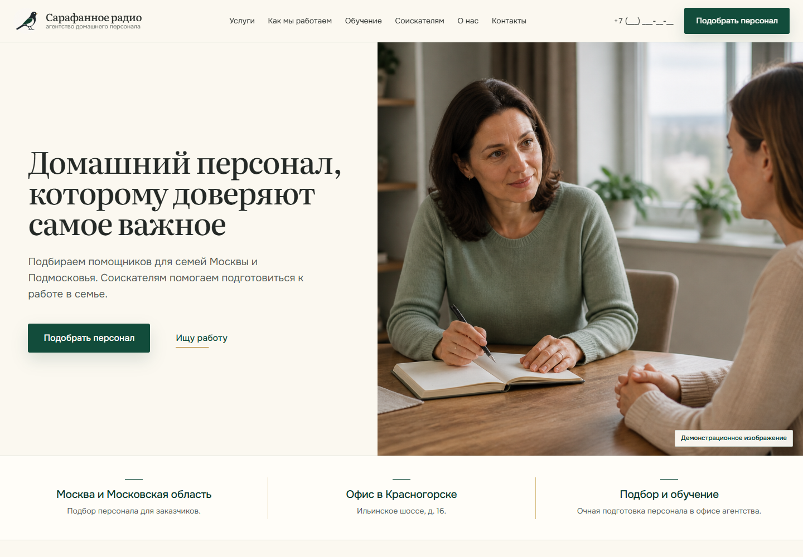
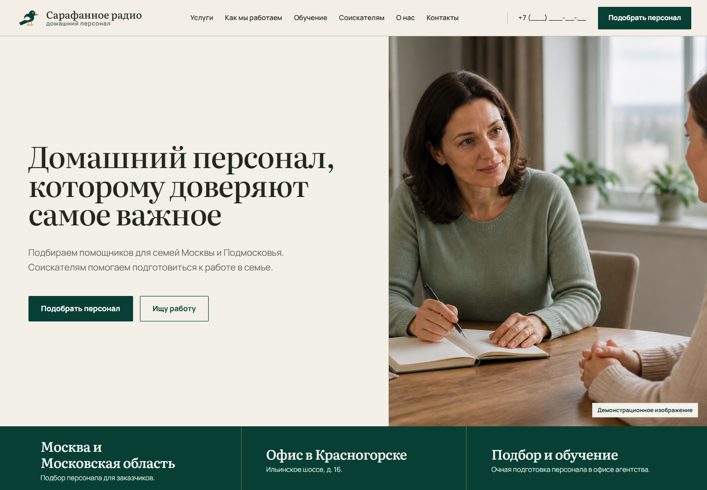

Сдержанная классика
Больше воздуха, тонкие линии, спокойная мозаика и мягкая редакционная подача.
Открыть полный лендингОдинаковая структура и содержание от шапки до контактов. Отличается только визуальная система. Это desktop-прототипы для выбора направления, а не опубликованный сайт.

Больше воздуха, тонкие линии, спокойная мозаика и мягкая редакционная подача.
Открыть полный лендинг
Контрастнее ритм, глубокие изумрудные поля и композиция редакционного разворота.
Открыть полный лендинг